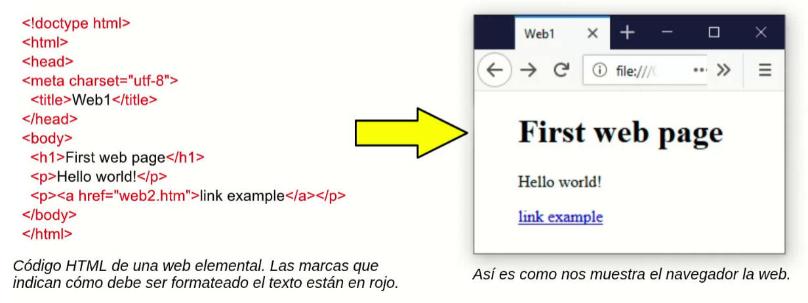
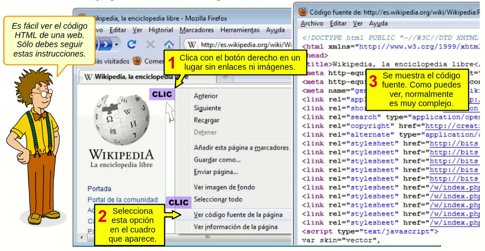

Las páginas web se escriben utilizando un lenguaje denominado HTML ("HyperText Markup Language" o Lenguaje de Marcado de Hipertexto). Se dice que es un lenguaje de marcado porque utiliza marcas (también llamadas etiquetas o "tags") para describir las características del contenido. Por ejemplo, si ponemos: `<title>Éste es el título</title>` indicamos al navegador que el texto situado entre dos marcas "title" es el título de la web. Se le llama "de hipertexto" porque tiene enlaces que, al ser clicados, llevan al usuario a la información que hay en otra web. Debajo puedes ver el ejemplo de una web muy básica. El texto de la izquierda es su código HTML (lo que nos da el servidor web). A la derecha puedes ver cómo lo formatea el navegador: interpreta las marcas que hay en el código y, siguiendo sus indicaciones, "dibuja" la web que muestra al usuario.

